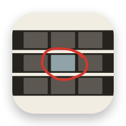

Kvikkshot 1.0.0Answers to common questions, the privacy policy and the terms. If something isn't covered here, write to us and we'll reply.
Anything macOS can play: MP4, MOV, M4V and the H.264, HEVC and ProRes inside them. MKV, AVI and WebM files need converting first, for example with HandBrake.
Fast mode takes the nearest keyframe to each point, which is why even long 4K videos take seconds. Turn on Precise Frames when you need the exact moment; it decodes more and is slower.
The video is damaged at those points, or it is still being copied or downloaded. Kvikkshot retries every missing frame with a fresh decoder before it gives up, and tells you how many are missing instead of stopping.
Export asks for a folder and creates a “… Screenshots” folder inside it for each video. To skip the question, choose a default folder in Settings.
Only in Kvikkshot's private temporary folder while you work. It is emptied when you go back to the start screen, when you quit, and at the next launch if Kvikkshot was quit unexpectedly.
The Mac App Store version updates through the App Store. In the downloaded version, choose Help › Check for a New Version; it opens this website in your browser, because Kvikkshot itself never goes online.
Drag Kvikkshot from Applications to the Bin. Its settings are in ~/Library/Containers/com.feiyangtang.Kvikkshot, which you can delete too.
Last updated 21 October 2026. This policy covers the Mac App Store version and the version downloaded from GitHub.
Kvikkshot collects no data. It has no network access: the App Sandbox does not let it connect to the internet. There are no accounts, analytics, telemetry, crash reporting, advertising or update checks, and no third-party code.
It reads the videos you open, keeps the screenshots it makes in its own temporary folder while you work, and writes files only where you export or save them. It remembers your settings, the last folder you exported to and, if you choose one, your default export folder. All of this stays on your Mac.
Links in the Help menu open in your browser, outside Kvikkshot. “Check for a New Version” tells this website which version you have, so it can say whether a newer one exists.
Kvikkshot is suitable for all ages and collects nothing from anyone, including children. Questions about privacy: support@tang-spark.no.
Kvikkshot is free. You may use it for personal and commercial work, and the screenshots and share images you make are yours.
It is provided as is, without warranty. TangSpark is not liable for loss of data or other damages from using it, as far as the law allows. Only process videos you have the right to use.
Mac App Store downloads are also covered by Apple's standard licence agreement.
First release: screenshots by interval or count, fast and precise modes, several videos at once, share images, four languages.
Write to support@tang-spark.no. It helps to include your macOS version, the Kvikkshot version (Kvikkshot › About Kvikkshot) and, for a video that won't open, its format and where it is stored.